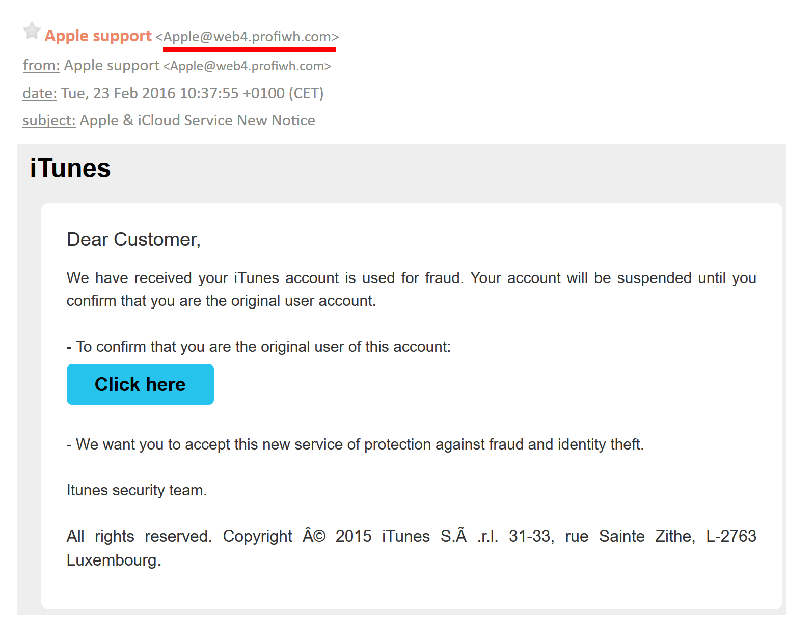
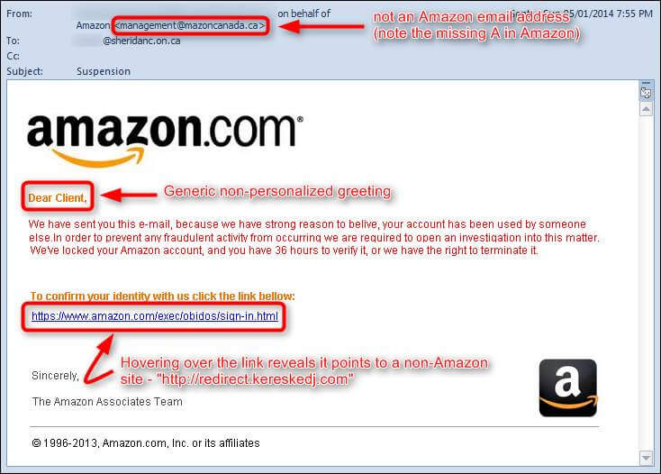
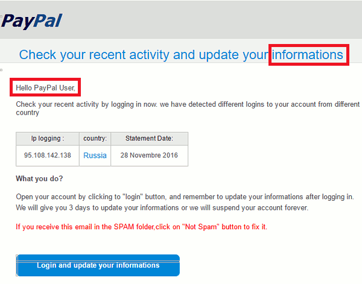

the attacker attempts to introduce corrupt DNS cache information to a
host in an attempt to access another host using their domain name
an attack where multiple compromised systems, which are often infected with
a Trojan, are used to target a single system causing a Denial of Service.
that automatically delivers advertisements to a user to generate revenue
for its creator. This can be done through pop-up internet ads or ads embedded
in the interface of a program.
None of the Above
2.Which of the following is not a type of Man in A Middle Attack ?
ARP Spoofing
Rogue Access Point
mDNS Spoofing
DNS Amplification
3.Which of the following is one way that a user can avoid being a victim of Phishing ?
Request a new email every 30 days.
Install an Anti-Phishing Toolbar.
Establish a new MAC address when browsing.
There is nothing that can be done.
4.What of the following are examples of Malware Attacks
Worm,HTTP Flood
Dictionary Attack, Spyware
Ransomware,Trojan Horse
Rogue Access Point, DNS amplification
5.What is a Man In The Middle Attack ?
An attack in which the attacker exploits vulnerabilites in domain name system(DNS)
servers to turn initially small queries into much larger payloads
when a perpetrator positions himself in a conversation between a user and
an application,either to eavesdrop or to impersonate one of the parties,
making it appear as if a normal exchange of information is underway
when a target or targets are contacted by email, telephone or text message by someone posing
as a legitimate institution to lure individuals into providing sensitive data
attack in which the attacker targets one or more Domain Name System (DNS) servers belonging to
a given zome, attempting to hamper resolution of resource records of that zone and its sub-zones
6.What is a hybrid attack ?
It breaks possible passphrases down into fingerprints, single and multi-character combinations
that a user might choose
using a random approach by trying different passwords and
hoping that one works
a dictionary of common passwords is used to attempt to gain access to a
user's computer and network
A blend of both a dictionary method as well as brute force attack. This means while a
dictionary method would include a wordlist of passwords, the brute-force attack would be applied to each possible
password in that list
7.Which of the following images represent an email phishing attack ?



None of the above
8. Man-In-The-Middle Attack victims are usually users of:
Finacial Applications
SaaS Businesses
e-commerce sites
Any website where logging in is required
9.In the Occupy Central vs. Chinese Goverment DDOS attack, what occured? ?
The Chinese Goverment website was overwhelmed with ICMP echo requests.
Sites were plummeted with bot traffic at a remarkable 500 gigabits per second.
vulnerabilities in the DNS servers were exploited and brought down.
The computer systems of the chinese goverment was infected with malware.
10.Which is ransomware?
a malicious computer program used to alter the way the computer operates,
and capable of replicating itself and spreading to other devices.
is when an attacker sets up their own wireless access point and
trick nearby devices to join its domain.
flooding the victim's network with request packets, knowing that
the network will respond with an equal number of reply packets.
a type of malware that can restrict users from accessing a system
or data, and even delete or publish data if a ransom is not paid.